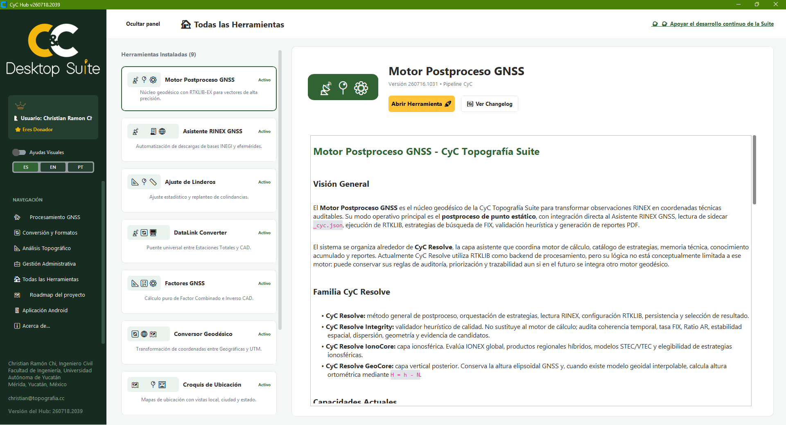

v260717.1120 (Release Desktop) Latest
Última publicación instalable para Windows, enlazada al instalador oficial de GitHub Releases.
Página de distribución lista para mostrar novedades por versión y screenshots.
Centro oficial de distribución
Un Hub profesional para convertir observaciones GNSS, datos de campo y decisiones de ingeniería en resultados precisos, trazables y listos para entregar.

Novedades
Consulta los cambios más recientes publicados para CyC Topografía Suite, con énfasis en releases instalables y notas de distribución.
Última publicación instalable para Windows, enlazada al instalador oficial de GitHub Releases.
Página de distribución lista para mostrar novedades por versión y screenshots.
Licencias y apoyo al proyecto
CyC Desktop Suite no bloquea herramientas, módulos, cálculos, exportaciones ni flujos de trabajo por estado de licencia. Las aportaciones ayudan a sostener el desarrollo y pueden pausar banners de apoyo cuando ese sistema esté activo.
Directorio técnico
Cada módulo resuelve una etapa concreta sin romper la continuidad de los datos ni la trazabilidad del proyecto.
Documento técnico fundamental
Documento técnico de respaldo externo para interpretar CyC Resolve, Resolve Integrity, IonoCore y GeoCore dentro del flujo de postproceso GNSS de CyC Topografía Suite.
Cargando resumen técnico CyC Resolve...
Pipeline CyC
Selecciona cualquier módulo del directorio para consultar primero su documentación técnica y, a continuación, las etapas concretas de su pipeline operativo.
Instalación
Descarga la publicación más reciente y ejecuta el instalador oficial. No necesitas preparar Python ni instalar librerías por separado.
CyC Desktop Suite v260717.1120
Descargar instalador .exeVer publicación y notas Instalador oficial publicado en GitHub ReleasesSuite móvil Android · v0.1.0 debug
Herramientas técnicas para campo, revisión rápida y preparación de información desde el teléfono, alineadas con la identidad visual y operativa de CyC Topografía Suite.
Geodesia, CAD, bitácora y conversión de datos en sitio.
Release Android de CyC Mobile Suite.
Cargando documentación Android...